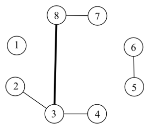

小强要在 $N$ 个孤立的星球上建立起一套通信系统。这套通信系统就是连接 $N$ 个点的一个树。这个树的边是一条一条添加上去的。在某个时刻，一条边的负载就是它所在的当前能够联通的树上路过它的简单路径的数量。

例如，在上图中，现在一共有五条边。其中，$(3,8)$ 这条边的负载是 $6$，因为有六条简单路径 $2-3-8,\ 2-3-8-7,\ 3-8,\ 3-8-7,\ 4-3-8,\ 4-3-8-7$ 路过了 $(3,8)$。
现在，你的任务就是随着边的添加，动态的回答小强对于某些边的负载的询问。
第一行包含两个整数 $N,Q$，表示星球的数量和操作的数量。星球从 $1$ 开始编号。
接下来的 $Q$ 行，每行是如下两种格式之一：
A x y表示在 $x$ 和 $y$ 之间连一条边。保证之前 $x$ 和 $y$ 是不联通的。
A x y
Q x y表示询问 $(x,y)$ 这条边上的负载。保证 $x$ 和 $y$ 之间有一条边。
Q x y
对每个查询操作，输出被查询的边的负载。
8 6 A 2 3 A 3 4 A 3 8 A 8 7 A 6 5 Q 3 8
6
对于所有数据，$1 \leq N,Q \leq 100000$。
 Comet OJ
Comet OJ